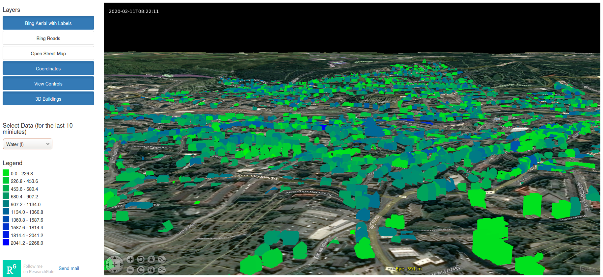

Next: Comparison to reference studies Up: Interactive Urban Building Energy Previous: Case Study
The web-interface of UBE-FMI for Wuppertal is presented in Figure 7. It illustrates the capacity of the JavaScript library NASA WorldWind to visualize three-dimensional models. When the system is initialized, energy, water demand and global warming potential of every building of the last 10 minutes will be indicated, as described in Section 2.3. The web-interface demonstrates the capacity of UBE-FMI to response to changing conditions during the simulation without the need to re-initialize. Current or future weather data can be fed into the simulation to forecast energy demand. The web-interface might encourage to voluntarily shed loads.
 (a) Energy demand in kilowatt hour. |
|  (b) Water demand in litre. |
(c) Global warming potential in gram of CO2 equivalent. |
The following two sections address the performance of the model in comparison to reference studies and test its application in the form of a scenario illustrating the possible benefits for municipalities and their public utilities.